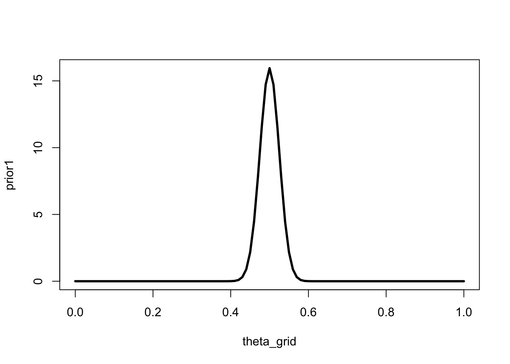
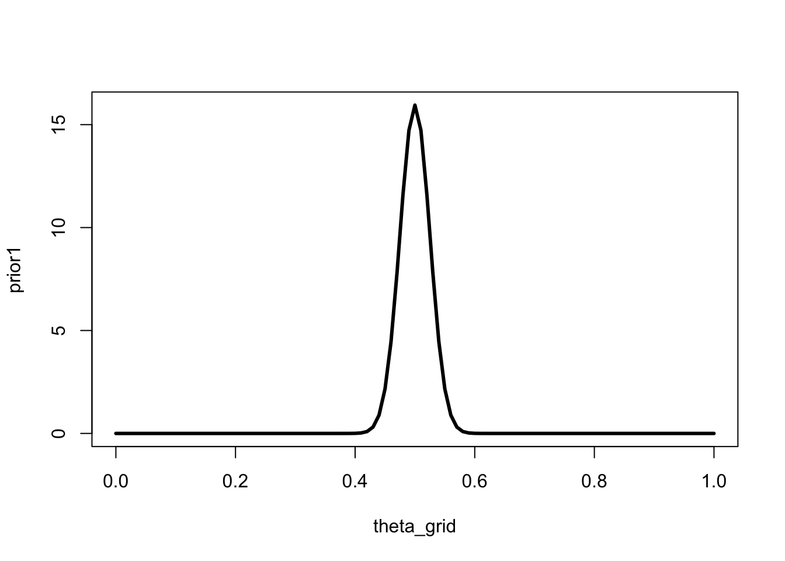
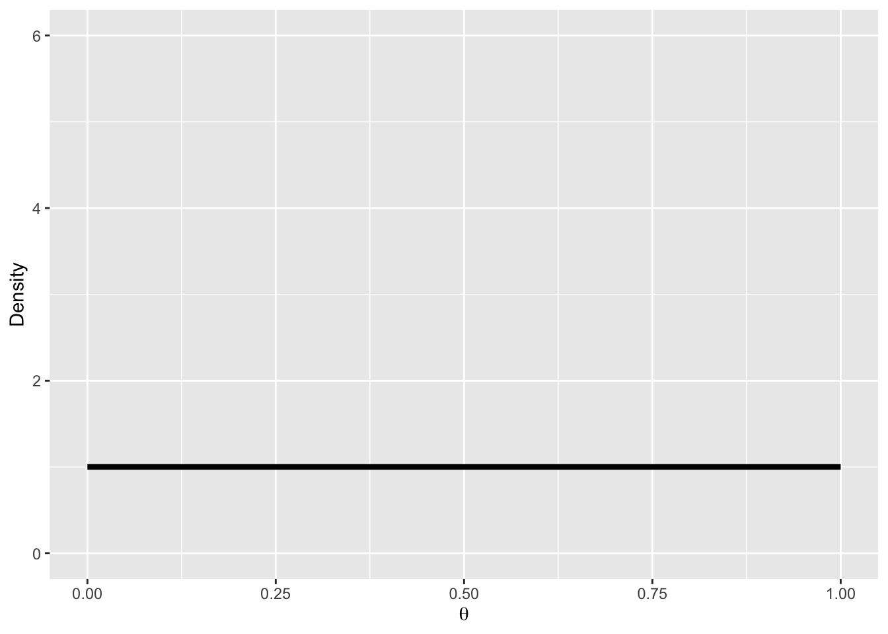

![]()
theta_grid <- seq(0, 1, length = 101)
prior1 <- dbeta(theta_grid, shape1 = 200, shape2 = 200)
plot(theta_grid, prior1, "l", lwd = 3)
Eine Alternative zu Null Hypothesis Significance Testing (NHST).
In der heutigen Sitzung:
Keysers, Gazzola, and Wagenmakers (2020)
Wir haben uns bisher damit beschäftigt, wie man Parameter in einem einfachen Modell schätzt, und wir haben angesprochen, wie man Unsicherheit in unseren Parameterschätzungen durch Wahrscheinlichkeitsverteilungen quantifiziert.
Ein Modell ist eine Menge von Parametern, die wir verwenden, um die beobachteten Daten vorherzusagen. Zum Beispiel hatten wir im Kartenspiel verschiedene Vorannahmen über die Fähigkeiten der Spieler A und B. Eine Vorannahme drückte unsere Überzeugung aus, dass beide Spieler gleich gut waren, während eine andere Vorannahme die Überzeugung ausdrückte, dass entweder Spieler A oder Spieler B besser war. Diese Vorannahmen, zusammen mit unseren Annahmen über die Verteilung der Daten, bilden ein Modell \(\mathcal{M}\).
In der Bayesianischen Parameterschätzung konzentrieren wir uns auf ein Modell \(\mathcal{M}\). Das Ziel unserer Inferenz ist die a-posteriori-Verteilung der Parameter, und wir können diese durch Anwendung von Bayes’ Theorem erhalten (unter Verwendung von MCMC oder anderen Methoden).
\[ p(\theta | y) = p(\theta) \cdot \frac{p(y | \theta)}{p(y)} \]
Wir können die Bayes’sche Regel umformulieren, so dass die Abhängigkeit der Parameter \(\mathbf{\theta}\) vom Modell \(\mathcal{M}\)) eindeutig ist: \[ p(\theta | y, \mathcal{M}) = \frac{p(y|\theta, \mathcal{M}) p(\theta | \mathcal{M})}{p(y | \mathcal{M})} \]
wo \(\mathcal{M}\) auf ein spezifisches Modell verweist. Dieses Modell wird durch die a-priori-Verteilung der Parameter \(p(\theta | \mathcal{M}\) und die Verteilung der Daten \(p(y|\theta, \mathcal{M})\) bestimmt.
Die marginale Wahrscheinlichkeit \(p(y | \mathcal{M})\) gibt nun die Wahrscheinlichkeit der Daten an, gemittelt über alle möglichen Parameterwerte unter der Vorverteilung im Modell \(\mathcal{M}\).
The marginal likelihood \(p(y | \mathcal{M})\) is usually neglected when looking at a single model, but becomes important when comparing models.
Writing out the marginal likelihood \(p(y | \mathcal{M})\): \[ p(y | \mathcal{M}) = \int{p(y | \theta, \mathcal{M}) p(\theta|\mathcal{M})d\theta} \]
we see that this is averaged over all possible values of \(\theta\) that the model will allow.
The priors on \(\theta\) are important, because they determine the probability of possible values of \(\theta\).
The model evidence will depend on what kind of predictions a model can make. This gives us a measure of complexity – a complex model is a model that can make many predictions.
The problem with making many predictions is that most of these predictions will turn out to be false. The complexity of a model depends on (among other things):
When a parameter priors are broad (uninformative), those parts of the parameter space where the likelihood is high are comparatively assigned low probability (because the probability is spread out over the whole parameter space). Intuitively, if one hedges one’s bets, one has to assign low probability to parameter values that make good predictions.
The following prior makes quite a strong prediction about the value of \(\theta\) - it is centred on \(0.5\), and the spread is small. Both small and large values are assigned very little probability.
theta_grid <- seq(0, 1, length = 101)
prior1 <- dbeta(theta_grid, shape1 = 200, shape2 = 200)
plot(theta_grid, prior1, "l", lwd = 3)
The next prior makes less strong predictions, in the sense that it assigns higher probability to small and large values of \(\theta\) (compared to the previous prior, shown as a dashed line).
prior2 <- dbeta(theta_grid, shape1 = 2, shape2 = 2)
plot(theta_grid, prior1, "l", lty="dashed")
lines(theta_grid, prior2, "l", lwd = 3)A model that makes more precise predictions, i.e. a model with a stronger prior, is considered less complex that a model that makes many predictions.
Now consider that we have two models, \(\mathcal{M1}\) and \(\mathcal{M2}\). We would like to know which model explains the data better. We can use Bayes’ rule to calculate the posterior probability of \(\mathcal{M1}\) and \(\mathcal{M2}\) (marginalized over all parameters within the model).
\[ p(\mathcal{M}_1 | y) = \frac{P(y | \mathcal{M}_1) p(\mathcal{M}_1)}{p(y)} \]
and
\[ p(\mathcal{M}_2 | y) = \frac{P(y | \mathcal{M}_2) p(\mathcal{M}_2)}{p(y)} \]
One way of comparing the models is by taking the ratio \(p(\mathcal{M}_1 | y) / p(\mathcal{M}_2 | y)\).
\[ \frac{p(\mathcal{M}_1 | y) = \frac{P(y | \mathcal{M}_1) p(\mathcal{M}_1)}{p(y)}} {p(\mathcal{M}_2 | y) = \frac{P(y | \mathcal{M}_2) p(\mathcal{M}_2)}{p(y)}} \]
The term \(p(y)\) cancels out, giving us:
\[ \frac{p(\mathcal{M}_1 | y) = P(y | \mathcal{M}_1) p(\mathcal{M}_1)} {p(\mathcal{M}_2 | y) = P(y | \mathcal{M}_2) p(\mathcal{M}_2)} \]
On the left-hand side, we have the ratio of the posterior probabilities of the two models. On the right-hand side, we have the ratio of the marginal likelihoods of the two models, multiplied by the prior probabilities of each model. The marginal likelihoods (also know as model evidence) tell how well each model explains the data.
\[ \underbrace{\frac{p(\mathcal{M}_1 | y)} {p(\mathcal{M}_2 | y)}}_\text{Posterior odds} = \underbrace{\frac{P(y | \mathcal{M}_1)}{P(y | \mathcal{M}_2)}}_\text{Ratio of marginal likelihoods} \cdot \underbrace{ \frac{p(\mathcal{M}_1)}{p(\mathcal{M}_2)}}_\text{Prior odds} \]
\(\frac{p(\mathcal{M}_1)}{p(\mathcal{M}_2)}\) are the prior odds, and \(\frac{p(\mathcal{M}_1 | y)}{p(\mathcal{M}_2 | y)}\) are the posterior odds. These tell us which model we believe to be mode probable a priori and a posteriori.
We are particularly interested in the ratio of the marginal likelihoods:
\[ \frac{P(y | \mathcal{M}_1)}{P(y | \mathcal{M}_2)} \]
This is the Bayes factor, and it can be interpreted as the change from prior odds to posterior odds that is indicated by the data.
If we consider the prior odds to be \(1\), i.e. we do not favour one model over another a priori, then we are only interested in the Bayes factor. We write this as:
\[ BF_{12} = \frac{P(y | \mathcal{M}_1)}{P(y | \mathcal{M}_2)}\]
Here, \(BF_{12}\) indicates the extent to which the data support model \(\mathcal{M}_1\) over model \(\mathcal{M}_2\).
As an example, if we obtain a \(BF_{12} = 5\), this mean that the data are 5 times more likely to have occured under model 1 than under model 2. Conversely, if \(BF_{12} = 0.2\), then the data are 5 times more likely to have occured under model 2.
The following interpretations are sometimes used (based on Andraszewicz et al. (n.d.)), although it is not really necessary or helpful to classify Bayes factors.
We usually perform model comparisons between a null hypothesis \(\mathcal{H}_0\) and an alternative hypothesis \(\mathcal{H}_1\). The terms “model” and “hypothesis” are used synonymously. A null hypothesis means that we fix the value of the parameter to a certain value, e.g. \(\theta = 0.5\). The alternative hypothesis means that we do not fix the value of the parameter, e.g. we do not assume that the parameter is \(0.5\).
It is important to note that the alternative hypothesis needs to be specified. In other words, the parameter(s) need to given a prior distribution.
In JASP, we will see Bayes factors reported as either
\[ BF_{10} = \frac{P(y | \mathcal{H}_1)}{P(y | \mathcal{H}_0)}\]
which indicates a BF for an undirected alternative \(\mathcal{H}_1\) versus the null, or
\[ BF_{+0} = \frac{P(y | \mathcal{H}_+)}{P(y | \mathcal{H}_0)}\]
which indicates a BF for a directed alternative \(\mathcal{H}_+\) versus \(\mathcal{H}_0\).
If we want a BF for the null \(\mathcal{H}_0\), we can simply take the inverse of \(BF_{10}\):
\[ BF_{01} = \frac{1}{BF_{10}}\]
If we are comparing two nested models, i.e. a model with 1 free parameter and null model (in which that parameter is fixed to a certain value) we can use the Savage-Dickey density ratio to calculate the Bayes factor.
Under the null model (\(\mathcal{H}_0\) or \(\mathcal{M}_0\)): \(\theta = \theta_0\)
under the alternative model (\(\mathcal{H}_1\) or \(\mathcal{M}_1\)): \(\theta \neq \theta_0\)
We need to specify a prior distribution of \(\theta\) under \(\mathcal{H}_1\). If we consider the card game example, e.g. \(\theta \sim \text{Beta}(1, 1)\).
The Savage-Dickey Density Ratio is a simplified manner of obtaining the Bayes factor - we simply need to consider \(\mathcal{M}_1\), and divide the posterior by the prior at the value \(\theta_0\).
Let’s look at an example from Wagenmakers et al. (2010):
You observe that a person correctly answers 9 out of 10 yes-or-no questions.
n_correct <- 9
n_questions <- 10We want to know: How likely is that to occur if the person was randomly guessing (\(\theta=0.5\))?
We will assume a uniform prior over \(\theta\):
\[ p(\theta) = Beta(1, 1) \]
pd <- tibble(
x = seq(0, 1, by = .01),
Prior = dbeta(x, 1, 1)
)
ggplot(pd, aes(x, Prior)) +
geom_line(linewidth = 1.5) +
coord_cartesian(xlim = 0:1, ylim = c(0, 6), expand = 0.01) +
labs(y = "Density", x = bquote(theta))
The next step is to update our prior with the likelihood, in order to obtain the posterior distribution of \(\theta\):
\[ p(\theta|y) = Beta(1 + 9, 1 + 1) \]
Now we can evaluate both the prior and posterior at the value \(0.5\).
Prior:
(dprior <- dbeta(0.5, 1, 1))[1] 1Posterior:
(dposterior <- dbeta(0.5, 10, 2))[1] 0.1074219The Bayes factor \(BF_{01}\) is the posterior density divided by the prior density:
BF01 <- dposterior / dpriorBF01[1] 0.1074219This is not so easy to interpret, so we calculate BF10 instead:
(BF10 <- 1/BF01)[1] 9.309091This means that the data are \(9.3\) times more likely to have occurred under the alternative than under the null model.
The following figure is how Bayes factors are usually visualized in JASP. We plot both the prior and posterior distributions, and the density under both, evaluated at \(\theta_0 = 0.5\).
The density of \(\theta_0\) is smaller after having taking into account the data, or in other words: the probability of \(\theta_0\) has decreased after observing the data. This allows us to conclude that the data (9 out of 10) are approximately 9 times more likely to have occured under \(\mathcal{M1}\).
pd <- pd |>
mutate(Posterior = dbeta(x, 1 + n_correct, 1 + (n_questions-n_correct)))
pdw <- pd |>
pivot_longer(names_to = "Type",
values_to = "density",
Prior:Posterior)
pdw |>
ggplot(aes(x, density, col = Type)) +
geom_vline(xintercept = 0.5, linetype = "dotted") +
geom_line(linewidth = 1.5) +
scale_x_continuous(expand = expansion(0.01)) +
scale_color_viridis_d(end = 0.8) +
labs(y = "Density", x = bquote(theta)) +
annotate("point", x = c(.5, .5),
y = c(pdw$density[pdw$x == .5]),
size = 4) +
annotate("label",
x = c(.5, .5),
y = pdw$density[pdw$x == .5],
label = round(pdw$density[pdw$x == .5], 3),
vjust = -.5
)
You can generate the following datasets, and then import the CSV files into JASP.
Player A wins 6 out of 9 games.
A student correctly answer 9 questions out of 10.
library(tidyverse)
n_correct <- 9
n_questions <- 10
questions <- c(rep(1, n_correct), rep(0, n_questions-n_correct)) |>
sample(n_questions, replace = FALSE)
questions <- tibble(question = 1:n_questions,
correct = if_else(questions == 1, "correct", "error"),
indicator = questions)
questions |> write_csv("questions.csv")Generate this dataframe, and export it as CSV file. In this example, we want to compare two groups’ IQ scores. One of the groups has been given a drug to make them smart, the other is the control group.
library(tidyverse)
smart = tibble(IQ = c(101,100,102,104,102,97,105,105,98,101,100,123,105,103,
100,95,102,106,109,102,82,102,100,102,102,101,102,102,
103,103,97,97,103,101,97,104,96,103,124,101,101,100,
101,101,104,100,101),
Group = "SmartDrug")
placebo = tibble(IQ = c(99,101,100,101,102,100,97,101,104,101,102,102,100,105,
88,101,100,104,100,100,100,101,102,103,97,101,101,100,
101, 99,101,100,100,101,100,99,101,100,102,99,100,99),
Group = "Placebo")
SmartDrug <- bind_rows(smart, placebo) |>
mutate(Group = fct_relevel(as.factor(Group), "Placebo"))write_csv(SmartDrug, file = "SmartDrug.csv")@online{ellis2022,
author = {Ellis, Andrew},
title = {Bayes {Factors:} {Bayesianische} {Hypothesentests}},
date = {2022-05-15},
url = {https://kogpsy.github.io/neuroscicomplabFS23//pages/chapters/bayesian-statistics-3.html},
langid = {en}
}